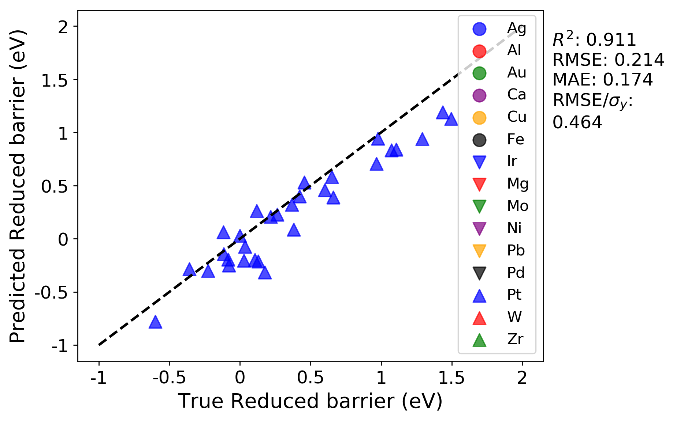

Making predictions by importing a previously fit model¶
Here, we are going to import a previously fit model, and use it to predict the migration barriers for those data points with Pt as the host element.
In your previous run, the LOG test split where the Pt host values were predicted is in the split_12 folder. The parity plot for Pt test data should look like the below plot for your previous run:

Here, we are going to import the model that was fitted to all the groups except Pt, and use MAST-ML’s data validation function as detailed above to obtain this same plot, but with using Pt as the validation data and the imported, previously trained model. If one were to extend this data set to include, for example, U as a host element, any number of previously trained models could be used to predict the migration barrier values for U. To import this model, save the KernelRidge_split_12.pkl file from your previous run into the /models/ folder (it is as the the same level as the /tests/ folder in your main MAST-ML directory). To import this model into your next run, you can create a new field in the Models section, as shown below:
Example:
[Models]
#[[KernelRidge]]
# kernel = rbf
# alpha = 0.034
# gamma = 0.138
#[[KernelRidge_select]]
# kernel = rbf
# alpha = 1
# gamma = 1
#[[KernelRidge_learn]]
# kernel = rbf
# alpha = 1
# gamma = 1
[[ModelImport]]
model_path = models/KernelRidge_split_12.pkl
As we are only interested in assessing the fit on Pt for this example, we can change the DataSplits section to only have the LOG test:
Example:
[DataSplits]
#[[NoSplit]]
[[RepeatedKFold]]
n_splits = 5
n_repeats = 2
#[[RepeatedKFold_learn]]
# n_splits = 5
# n_repeats = 2
[[LeaveOneGroupOut]]
grouping_column = Host element
From running this model and inspecting the test data parity plot in split_12 (the folder for Pt group, we obtain this parity plot:
As a comparison, this plot is exactly the same as the above plot from the previous run. This is the expected result, and demonstrates that the previously fit model was successfully imported and used to predict the Pt values. By inspecting the other groups, for example split_1, which is for Ag, the R squared and errors indicate a better fit than our previous run. This better fit is expected, as the model we saved from the previous run contained Ag in the training data, so these predictions on Ag should be improved (note that this is defeats the purpose of the LOG test, but shows that the trained model we imported is behaving as expected).